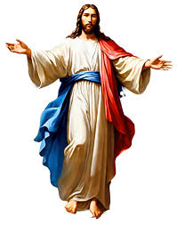

Balls
In the beginning God created the heaven and the earth. And the earth was without form, and void; and darkness was upon the face of the deep. And the Spirit of God moved upon the face of the waters.
And God said, Let there be light: and there was light. And God saw the light, that it was good: and God divided the light from the darkness. And God called the light Day, and the darkness he called Night. And the evening and the morning were the first day.
And God said, Let there be a firmament in the midst of the waters, and let it divide the waters from the waters. And God made the firmament, and divided the waters which were under the firmament from the waters which were above the firmament: and it was so. And God called the firmament Heaven. And the evening and the morning were the second day.
And God said, Let the waters under the heaven be gathered together unto one place, and let the dry land appear: and it was so. And God called the dry land Earth; and the gathering together of the waters called he Seas: and God saw that it was good.
